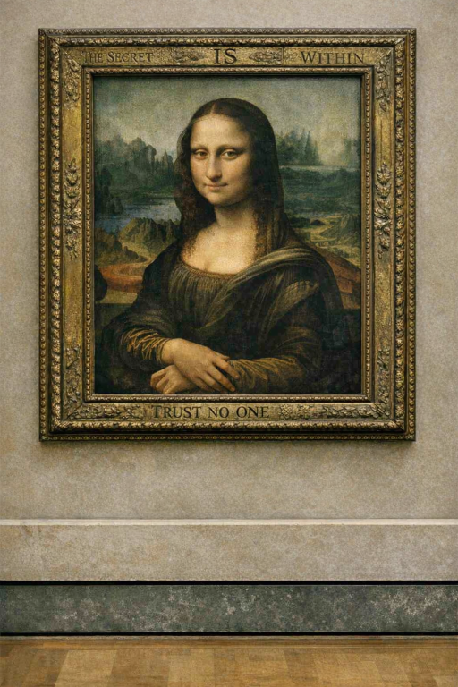
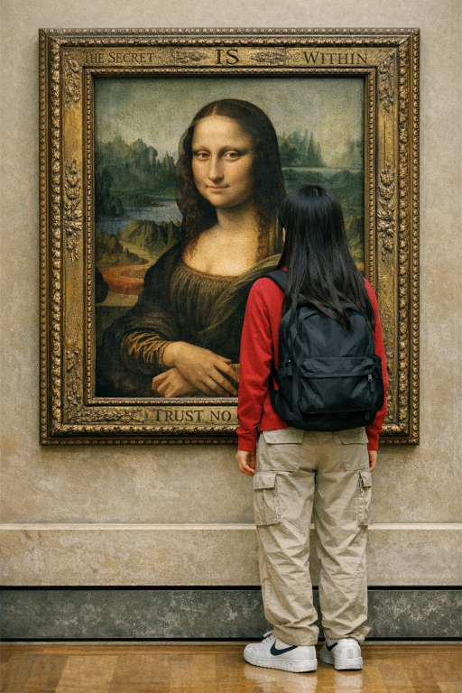
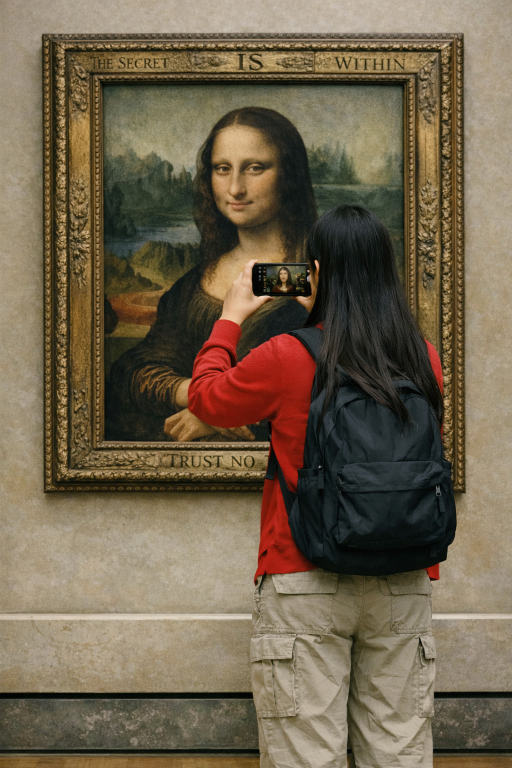
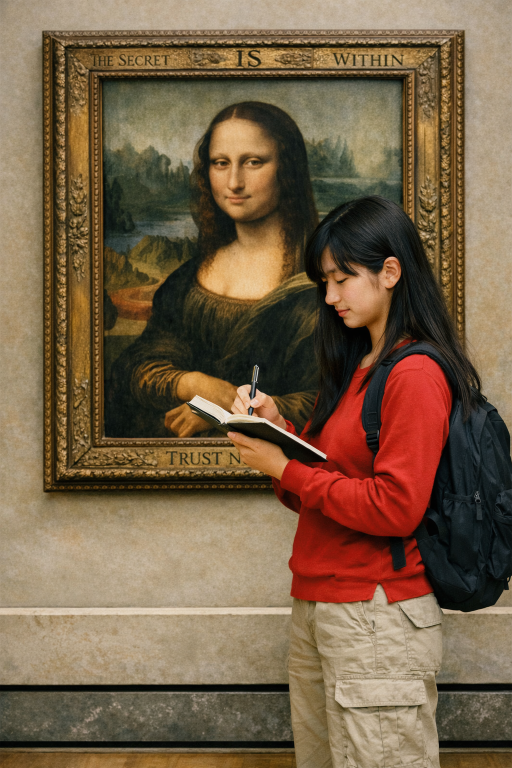

<!DOCTYPE HTML>

<html>
		
	<head>
		<title>CYOA</title>
		
		<style>
			body{
			background-color:#3AB2B6;
				}
				
			p{
				font-size:20px;
			}
			
			img{
				height:400px;
				border-radius:5%;
				}
		</style>
	</head>
</html>
	
	<body>
		<center>
			<h1>Patricia at the Lourve</h1>
		</center>
	
		<audio controls>
		<source src="music/museum.mp3" type="audio/mpeg">
		</audio>
	<table>
		<tr>
			<td>
				<center>
					
				</center>
			</td>
				<td>
					<p>Patricia adjusted the sleeves of her red shirt as she stood quietly 
					inside the grand hall
					of the Louvre Museum, staring up at the mysterious Mona Lisa. Her long black 
					hair rested neatly over 
					her shoulders, and her brown eyes carefully studied every tiny detail of the 
					famous painting. Wearing beige cargo pants and bright white Nike shoes, the
					Japanese teenager blended in with the crowd of tourists, but her attention never 
					left the artwork. Something about the painting felt unusual to her, as if it were
					hiding a secret waiting to be discovered.</p>
			
				</td>	
			</tr>
	</table>
			
	<table>
		<tr>
			
		<center>
			<td>	<p>As she inches closer to the gate,
					Patricia’s heartbeat
					thuds in her chest,
					loud enough that she’s convinced
					others can hear it.
					She tries to steady
					her breathing, reminding herself
					that thousands of people
					fly every day,
					that planes are engineered with
					layers of safety, that 
					she’s stronger than her fear.
					Still, her palms stay damp, and
					her thoughts keep circling
					back to the moment
					the plane lifts off the ground. 
					She shifts her weight, her
					white shoes squeaking
					softly on the polished floor, 
					and takes one more slow breath.
					Maybe this flight 
					will be the start of something
					new—something 
					she’ll look back on and feel
					proud of.</p>
			</td>
		</center>	
				<td>
					<center>
							
					</center>
			
				</td>
			</tr>
	</table>	
		
		
			<center>
				<table>
						<tr>
							<td><center><a href="page48.html"></a></center></td>
							<td><center><a href="page49.html"></a></center></td>
						</tr>
						<tr>
							<td><center><a href="page48.html">TAKE A QUICK PHOTO</a></center></td>
							<td><center><a href="page49.html">GET CLOSER TO WRITE IT DOWN</a></center></td>
						</tr>
						
				</table>
			</center>
							
	</body>					
	</body>

</html>